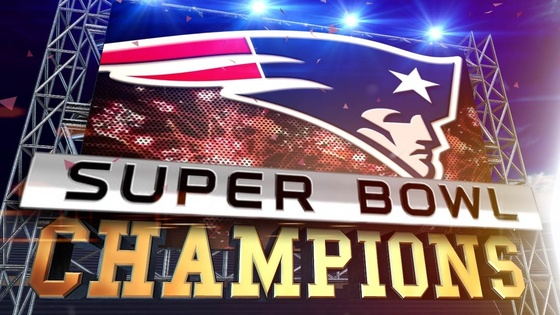

Three key plays that won the Super Bowl for Patriots
Julian Edelman 21-yard reception
The Patriots' three drives in the third quarter, when they fell behind, 24-14, consisted of six, five, and four plays (the last stretched into the fourth quarter by two plays). To say they needed to get something going would be an understatement of super proportions.
Then they faced third-and-14 on their first full possession of the fourth quarter. But Tom Brady stepped up in the pocket and threw a strike over the middle to Julian Edelman for 21 yards to keep the drive alive and bring the Patriots to midfield. This came against the Seahawks' excellent safety, Kam Chancellor, who delivered a shuddering hit to Edelman at the New England 49.
Six plays later, the Patriots were in the end zone on a Brady to Danny Amendola connection, and they had cut the Seahawks' lead to 24-21.
Julian Edelman touchdown reception
Obviously any game-winning touchdown is the most critical play of a game, but the added significance here is how it went down. Edelman ran the exact route that nearly resulted in a New England touchdown on its previous possession.
Lining up on Brady's left, Edelman cut toward the middle of the end zone, then quickly reversed course and faded back toward the sideline. Edelman's defender, Tharold Simon, was beaten, just as he had been the previous time when the pass went off Edelman's fingertips.
This time, it was an almost-too-easy touchdown reception.

Dont'a Hightower's tackle of Marshawn Lynch
On the Seahawks' second-to-last play, star running back Marshawn Lynch was stopped just short of the goal line. The crucial tackle was made by Patriots linebacker Dont'a Hightower, who got a hand on Lynch's feet, and linebacker Akeem Ayers, who drove Lynch to the ground.
If Lynch went in, the Seawhawks would never have had to make what many are calling the "worst call ever" to let Russell Wilson try to throw for the touchdown from the 1-yard line.
In fact, once Lynch reached the 1, many speculated whether the Patriots' best strategy would be to let the Seahawks score to get the ball back. In this case, the next play provided an interesting precedent coaches must now consider when faced with a similar scenario. Malcolm Butler's interception certainly backs those who would choose to trust their defense to get the job done.